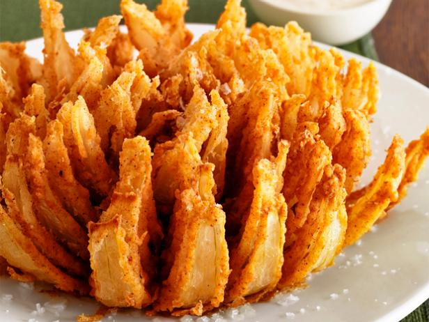

Blooming Onion

Description
The pinnacle of the Outback, the blooming onion, is a representation of everything that makes America great.
Ingredients
For the Dip
- Two tablespoons Mayo
- Two tablespoons sour cream
- One and a half teaspoons ketchup
- One tablespoon drained horseradish
- One quarter teaspoon paprika
- Pinch of cayenne pepper
- Kosher salt and freshly ground black pepper
For the onion
- One large sweet onion
- Two and a half cups all-purpose flour
- One teaspoon cayenne pepper
- Two table spoons paprika
- Half teaspoon dried thyme
- Half teaspoon dried oregano
- Half teaspoon ground cumin
- Black pepper
- Two large eggs
- One cup whole milk
- One gallon soy or corn oil for frying
- Kosher salt
Steps
- Combine all of the dip ingredients in a bowl, cover and refrigerate.
- Slice the onion (see Cook's Note).
Whisk the flour, cayenne, paprika, thyme, oregano, cumin
and 1/2 teaspoon black pepper in a bowl.
In a small deep bowl, whisk the eggs, milk and 1 cup water.
- Place the onion in a separate bowl,
cut-side up, and pour all of the flour mixture on top.
Cover the bowl with a plate, then shake back and forth to distribute
the flour. Check to make sure the onion is fully coated, especially
between the "petals." Lift the onion by the core,
turn over and pat off the excess flour; reserve the bowl of flour.
- Using a slotted spoon, fully submerge the onion in the egg mixture
(spoon on top, if necessary). Remove and let the excess egg drip off,
then repeat the flouring process.
Refrigerate the onion while you heat the oil.
- Fill a large deep pot with at least 3 inches of the oil,
leaving 2 inches of space at the top.
Heat the oil over medium-high heat until a deep-fry thermometer registers
400 degrees. Pat off excess flour from the onion.
Using a wire skimmer, carefully lower the onion into the oil, cut-side down.
Adjust the heat so the oil temperature stays close to 350 degrees.
Fry about 3 minutes, then turn the onion over and cook until golden,
about 3 more minutes; drain on paper towels.
Season with salt and serve with the dip.